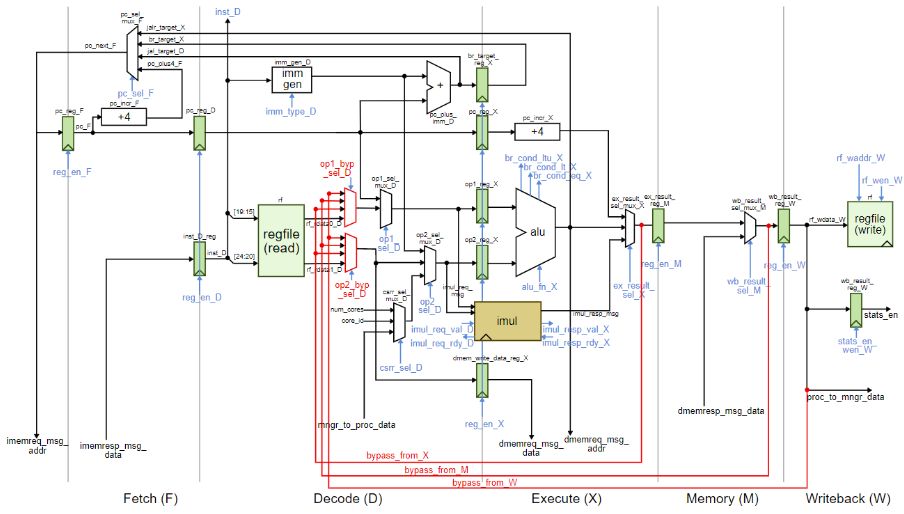

Floating Point Library [C2S2]
- SystemVerilog
- ASIC Design Flow
- Register Retiming
- Floating Point Arithmetic
- OpenLane
- Yosys
- ABC
in progress!
I am working with another student to integrate the
Berkeley HardFloat library
into the C2S2 IP.
We are currently working towards a Spring 2024 tape out by testing the HardFloat blocks and
researching options for register retiming using open-source synthesis tools.
Mode Stirring Antennas [Research]
- PCB Design
- RF Circuits
- Embedded Systems
This work was as part of Professor Matt Reynolds' Lab. I co-authored a paper on mode-stirring systems that was published in the 2023 IEEE International Conference on RFID! My work included designing and assembling 2.4GHz mode stirring antennas that control the phase of the reflected signal for two polarizations. I am currently working with the Reynolds' Lab group on a new paper detailing updates to the previous mode-stirring system.

Multicore Processor [Course Lab]
- Computer Architecture
- SystemVerilog
- Python
I designed and implemented a quad-core processor with a simple ring network, private instruction caches, and a shared, banked data cache. This project was a culmination of a semester's worth of labs for Professor Christopher Batten’s Computer Architecture course.
Packet Sampler [SpaceX]
- SystemVerilog
- FPGA Design Flow
For the second half of my internship at SpaceX, I architected an FPGA module to sample packet data as it passes through the Starlink satellite constellation, allowing systematic identification of drop points and network failures.
Robotic Arm Color Sorter [Course Lab]
- Computer Vision
- Inverse Kinematics
- Embedded Operating Systems
- Python
- Linux
I worked with a team to build a robotic arm that used machine learning to identify different colored “fruits” (colored puff balls) and sort them into bins. We used a Raspberry Pi running a Linux OS to control the system.